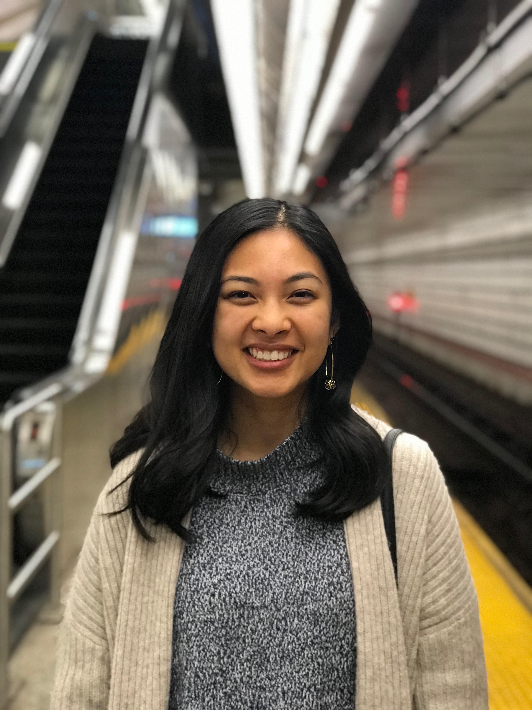

Hi my name is Cassandra, and I am a graphic and UI/UX designer based in Anaheim, CA.
Designer-me facts:
- I started off my graphic design journey by making flyers using PowerPoint! (I don't recommend it.)
- UCI Alumna, B.A. Art, B.S. Informatics, with a specialization in HCI
- I am a part of AIGA OC. Let's meet!
- I love designing for kids. I'd love to illustrate a children's book one day.
Human-me facts:
- I recently started watching Breaking Bad with my brothers. I definitely wish I watched it earlier!
- If I could go back in time to meet anyone, it would be Oscar Wilde. But I wouldn't want to meet him alone... he seems a little creepy honestly.
- I used to be a photographer at Disneyland :)